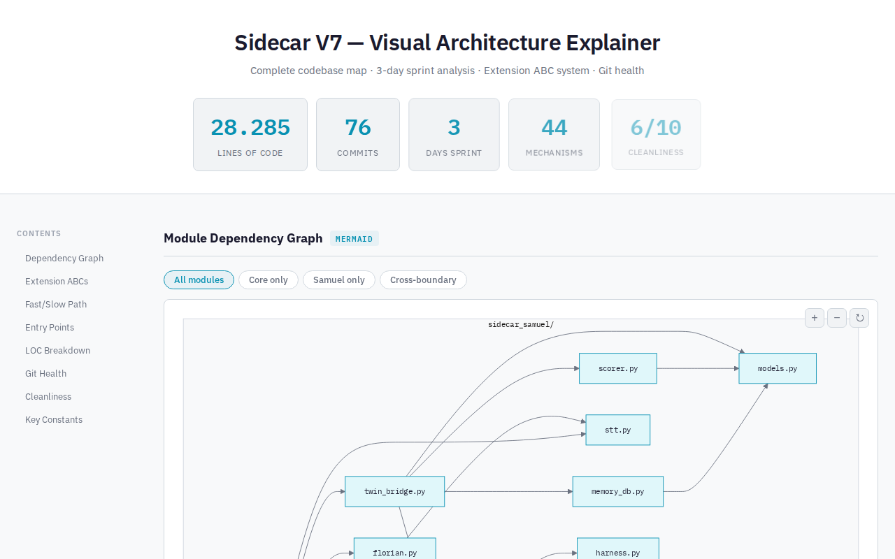
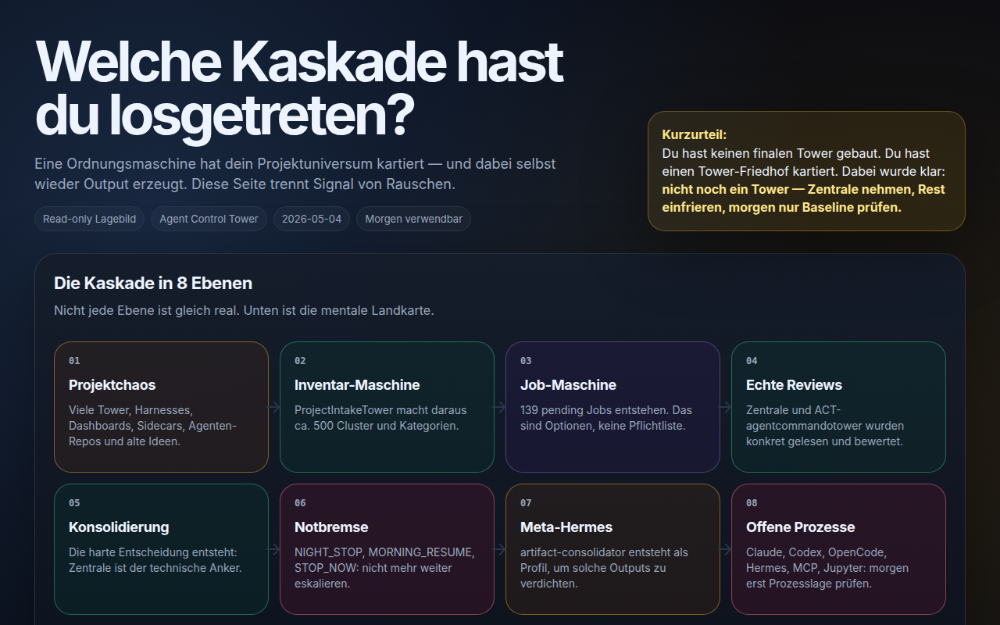
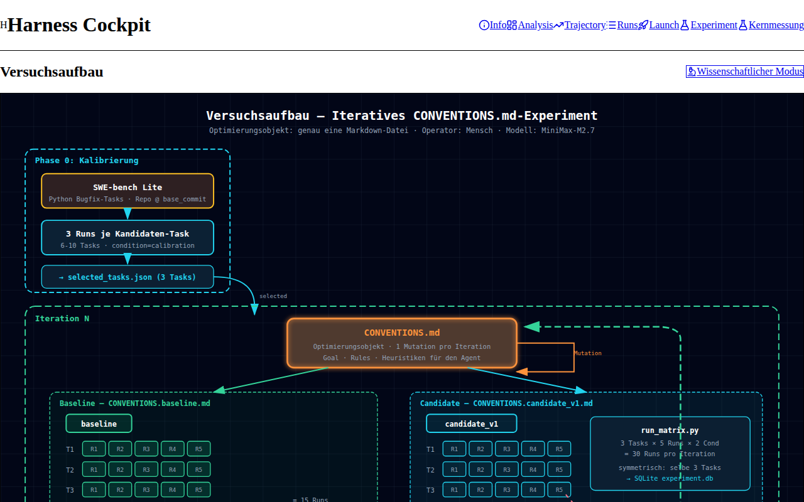
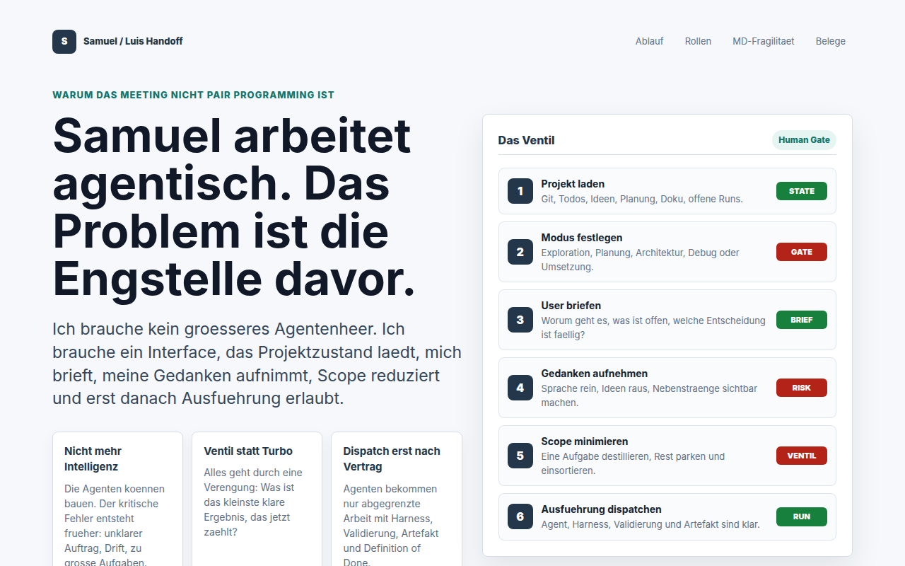
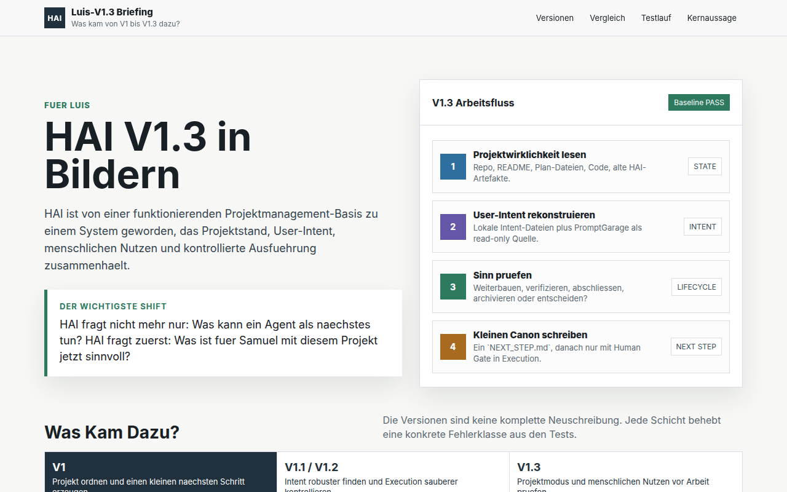

AI should not just answer.
It should be steerable, inspectable, and useful as a work tool without hiding what it is doing.
I build Human Agent Interfaces because I needed them myself. This page is the origin story and the personal path behind HAI — read the first block, and go deeper only if you want the long version.
HAI did not start as branding. It came from real work inside agentic systems: terminal agents, coding agents, harnesses, control layers, and the overload that appears when AI creates more output than a human can safely own.
I am Samuel Fleig, an AI Engineering student and AI engineer building Human Agent Interface (HAI): an approach for keeping agentic AI work observable, bounded, verifiable, and human-owned. HAI-MCP is the open-source, model-agnostic MCP control-plane implementation of that approach. My work connects terminal agents, coding agents, harnesses, owner gates, mission contracts, and evidence-based completion into workflows a human can still own.
The longer path. Everything below is the origin material behind the summary above.
Mein Weg war nie geradlinig. Heute erkenne ich darin einen roten Faden: die Frage, wie Menschen mit komplexen technischen Systemen verantwortlich zusammenarbeiten.
Ich habe Wirtschaftswissenschaften studiert, eine Ausbildung zum Fahrdienstleiter begonnen, in IT und Softwareentwicklung gearbeitet und mich schließlich immer tiefer mit Informatik, künstlicher Intelligenz und autonomen Agenten beschäftigt.
Lange sahen diese Stationen für mich eher wie Richtungswechsel aus. Heute erkenne ich darin einen roten Faden.
Bei der Deutschen Bahn habe ich gelernt, wie Menschen mit komplexen technischen Systemen zusammenarbeiten. Ein Fahrdienstleiter steuert nicht einfach Technik. Er arbeitet innerhalb eines Systems aus Zuständen, Regeln, Verantwortlichkeiten, Freigaben und Sicherheitsmechanismen. Die Technik kann sehr viel – aber am Ende muss klar sein, was sie tut, wer entscheiden darf und wann ein Mensch eingreifen muss.
Heute beschäftige ich mich wieder mit genau diesen Fragen. Nur sind die Systeme keine Stellwerke mehr, sondern KI-Agenten.
Je leistungsfähiger diese Agenten werden, desto weniger interessiert mich die Frage, ob ein Modell noch ein bisschen intelligenter wird. Mich interessiert zunehmend, was passiert, wenn wir diesen Systemen tatsächlich Arbeit übertragen.
Wie gebe ich einem Agenten eine Mission? Welche Werkzeuge darf er benutzen? Was darf er selbst entscheiden? Wann muss er nachfragen? Wie sehe ich, woran er gerade arbeitet? Wie verhindere ich, dass zehn parallele Agenten mehr Koordinationsaufwand erzeugen, als sie Arbeit abnehmen? Und wie baut man eine Schnittstelle, über die ein Mensch nicht nur mit einer KI chattet, sondern tatsächlich mit ihr zusammenarbeitet?
Daraus ist für mich das Thema Human-Agent-Interfaces entstanden.
Meine Informatik- und KI-Ausbildung gibt mir die technische Grundlage dafür. Mit MCP, Agent-Harnesses, Observability, Approval-Gates und eigener Agenteninfrastruktur beschäftige ich mich mit der Schicht zwischen Modell und Mensch – mit der Infrastruktur, durch die aus einem leistungsfähigen Modell ein kontrollierbares Arbeitssystem wird.
Gleichzeitig habe ich gemerkt, dass ich nicht ausschließlich im Labor oder vor einem Repository arbeiten möchte.
Mich interessiert der Moment, in dem KI auf die Realität einer Organisation trifft: bestehende Prozesse, alte Software, SharePoint-Listen, E-Mails, Sonderfälle, Menschen mit unterschiedlichen Arbeitsweisen und Anforderungen, die in keinem Lastenheft vollständig stehen.
Genau dort sehe ich meine Rolle als Forward Deployed Engineer.
Ich möchte nicht nur Software entwickeln und sie anschließend übergeben. Ich möchte verstehen, wie Menschen tatsächlich arbeiten, Systeme direkt in diesem Umfeld implementieren und aus der Realität lernen, was die nächste technische Abstraktion sein muss.
Deshalb gehören Forward Deployed Engineering und Human-Agent-Interfaces für mich zusammen.
Das eine beschreibt, wie ich arbeiten möchte: nah am realen Problem, zwischen Nutzer, Organisation und Technologie.
Das andere beschreibt, was ich bauen möchte: die Kontroll-, Kommunikations- und Koordinationsschicht zwischen Menschen und zunehmend autonomen KI-Systemen.
Rückblickend waren meine Umwege deshalb nicht das Gegenteil einer Spezialisierung. Sie haben mir verschiedene Seiten desselben Problems gezeigt.
Ich möchte die Schnittstelle bauen, an der menschliche Verantwortung und maschinelle Handlungsfähigkeit aufeinandertreffen.
Before studying AI Engineering, I completed five semesters of Applied Computer Science. In the course Architecture of Neural Networks 2, I built SelfAI - my own experimental AI harness - and received a 1.0 for the project. SelfAI was not just a chatbot exercise. It was an early attempt to treat AI as a steerable, inspectable work and thinking tool.
I do not frame my strongest work as classical software engineering. The stronger claim is agentic operation: using, coordinating, evaluating, and improving AI-coding systems until the work becomes observable, bounded, and useful for a human decision.
Across agent systems, coding agents, multi-agent workflows, control towers, harnesses, and automation setups, the same failure pattern appeared again and again: more threads, more decisions, more outputs, more drift, and more cognitive load. HAI is my answer to that problem.
It should be steerable, inspectable, and useful as a work tool without hiding what it is doing.
Agent work created artifacts, ideas, and partial decisions faster than the human could safely absorb.
More visibility did not automatically answer who owns scope, risk, proof, and the next responsible action.
HAI became the layer between human intention and agentic execution: bounded, verifiable, and human-owned.
The academic project already treated AI as something to structure, route, and inspect.
The private website frames agentic work as operation: observe, compare, route, evaluate, and publish proof.
Sidecar explores a second system that notices overload, drift, and loss of alignment in the human-agent loop. See the control layer.
HAI turns messy intent into bounded agent work with scope, evidence, stop rules, and a next decision.
These artifacts are secondary proof, not a claim of external customer validation. They show repeated contact with the same problem shape: agent output has to become visible, bounded, and checkable before it can be trusted.
The local timeline compresses apps, diagrams, analyses, and explainers without turning private logs into an overclaim.

Sidecar explored how a second agent layer can watch the collaboration itself instead of only doing more tasks. Open the Sidecar proof.

The control-tower line became evidence for why HAI must protect the human from agent cascades, not celebrate them.

Harness work turns behavior into traces, comparisons, and verdicts that can be inspected instead of guessed.

The collaboration with Luis forced the work into human-readable maps, roles, bottlenecks, and concrete next steps.

HAI matured into a filter for intent, human payoff, project state, and controlled execution.

The useful entry point is one real workflow: where context gets lost, where agents overproduce, where decisions stop being owned, or where the next step never becomes safe enough to run.